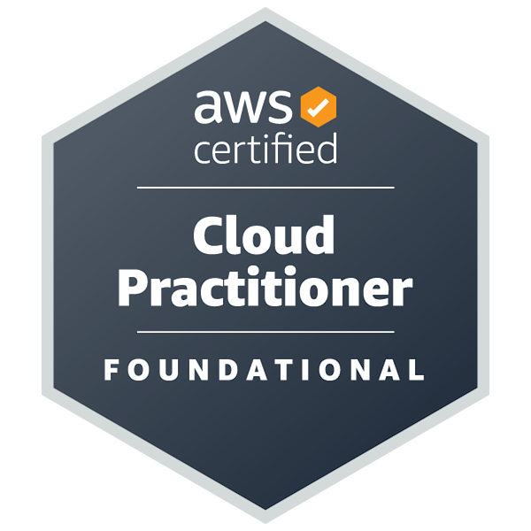
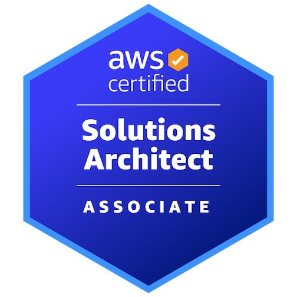
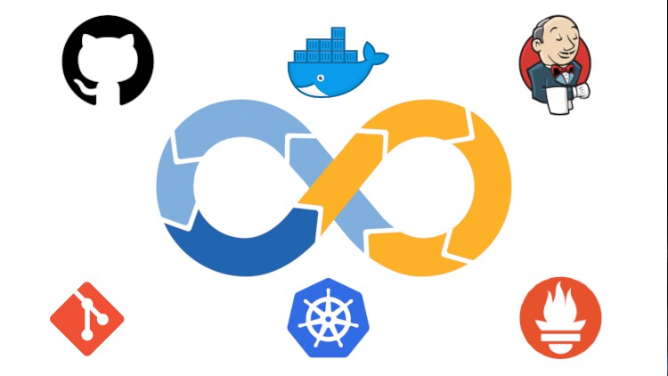

Certificaciones
Certifications
Certificaciones AWS
AWS certifications

AWS Certified Cloud Practitioner
Fundamentos de los servicios de AWS y de la arquitectura cloud.
Fundamentals of AWS services and cloud architecture.

AWS Certified Solutions Architect – Associate
Diseño de soluciones en AWS, con aplicación práctica en mis proyectos en Civir.
AWS solution design, applied in practice to my projects at Civir.
Formación complementaria
Additional training

DevOps & Kubernetes
Udemy
Automatización de tareas para la integración y distribución continua.
Task automation for continuous integration and deployment.
Terraform
Udemy
Formación práctica para automatizar el despliegue de infraestructura con Terraform.
Practical training in automating infrastructure deployment with Terraform.
Desarrollo de software
Software development
JavaScript · Python · C# · .NET
Idiomas
Languages
- EspañolNativo
- InglésB2
- ItalianoB2 · certificado
- SpanishNative
- EnglishB2
- ItalianB2 · certified